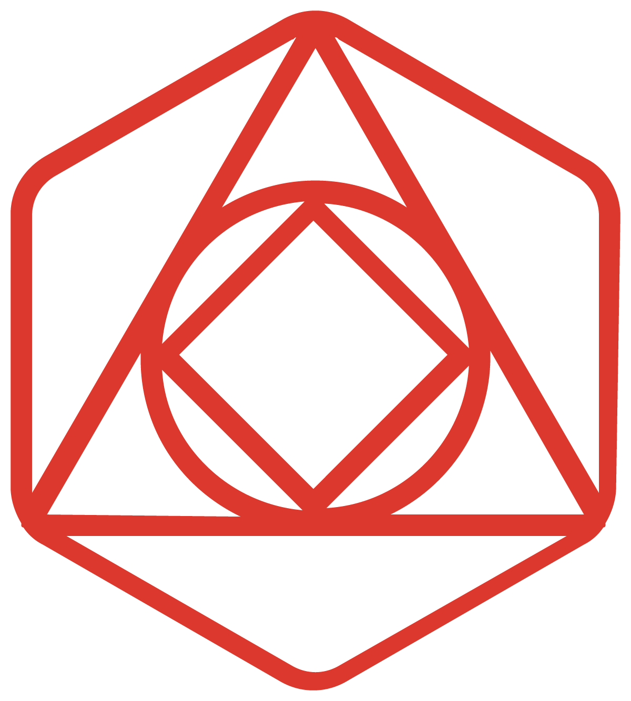

Redis plug-ins for Grafana
The Redis plug-ins for Grafana allow users to connect to the Redis databases and build dashboards in Grafana to observe and interact with Redis and Application data.
Introduction Quickstart Redis Data Source
Redis Data Source
Allows to connect to the Redis databases.


Redis Application plug-in
Provides Application pages and custom panels for Redis Data Source.


 Redis Explorer plug-in
Allows to connect to Redis Enterprise software clusters using REST API.